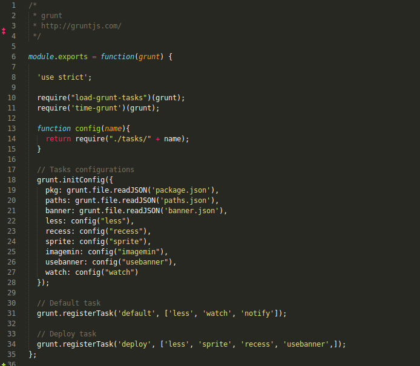
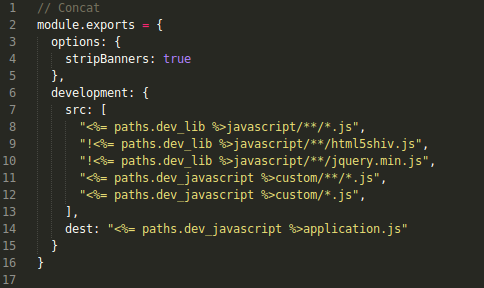
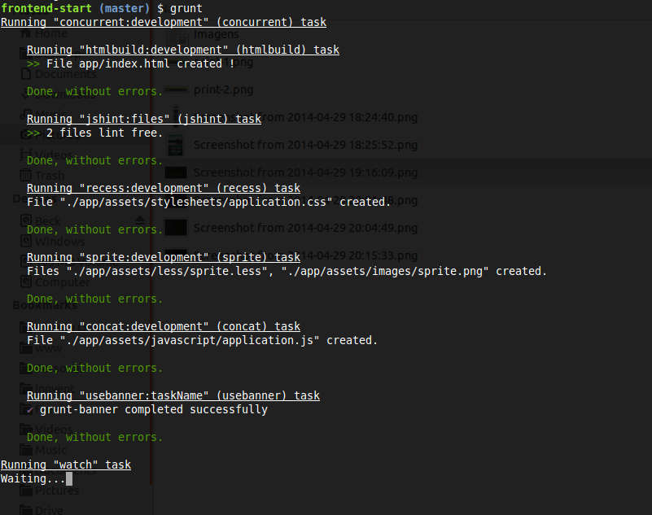
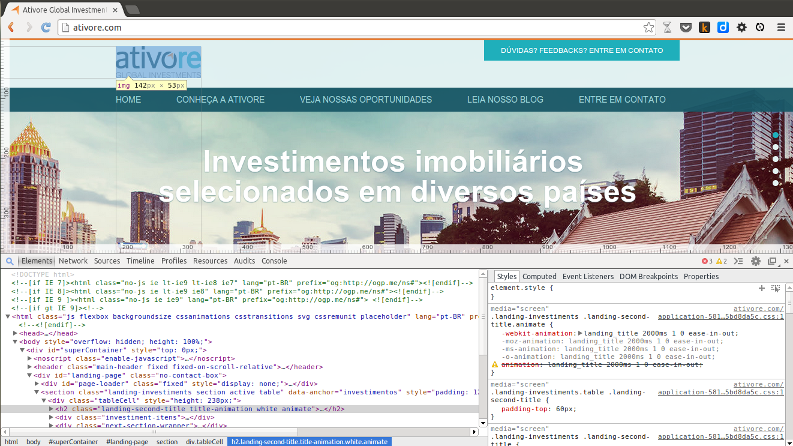

Workflow
Ferramentas que usamos
Pré processador CSS
Automatizador de tarefas
Chrome Developer Tools

Pré processador de CSS.
Ele dá um poder maior extendendo a linguagem e adicionando vários recursos:
- Variáveis
- Funções
- Mixins
- Manutenção do código
- Extensão do código
- Facilidade em criação de temas
Automatizador de tarefas
O Grunt tem como objetivo agilizar o workflow automatizando suas tarefas
- Concatenção de Javascript
- Otimização de imagens
- Compilação de arquivos LESS/SASS
- Testes unitários
- Validação de código
- Minificação de arquivos
- e muitas outras...
Arquivo de configuração Gruntfile.js
Configuração da tarefa
Tarefas sendo executadas
O que muda ao projeto Rails?
Nada!
Adicionamos o diretório grunt com os arquivos de configuração dentro do diretório app. De lá executamos as tarefas.
Os arquivos gerados pelas tarefas são adicionados aos diretórios de seu contexto.
Exemplo: exportamos o arquivo .css e .js ao diretório de stylesheets e javascripts respectivamente. Com isso o workflow do Desenvolvedor Rails não é alterado.
Chrome Developer Tools
Conjunto de ferramentas para auxiliar o desenvolvimento e depuração do projeto.
- Inspeção de elementos e estilos do DOM
- Gráfico de performance detalhando os arquivos carregados
- Sugestões para otimizar e diminuir o tempo de carregamento
- Visão global dos arquivos renderizados: scripts, estilos, repainting...
- Console javascript para depuração
